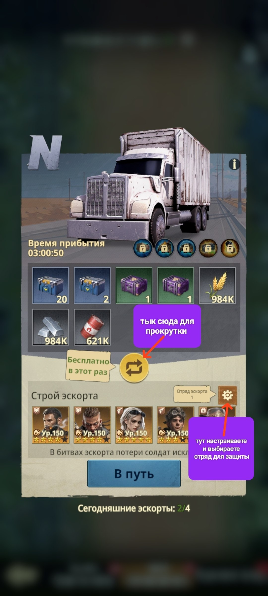
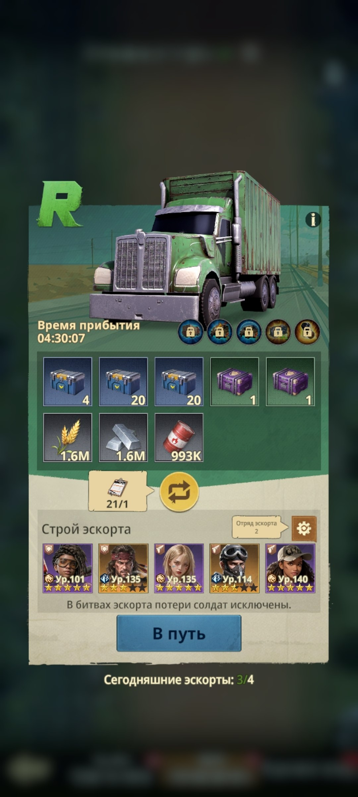
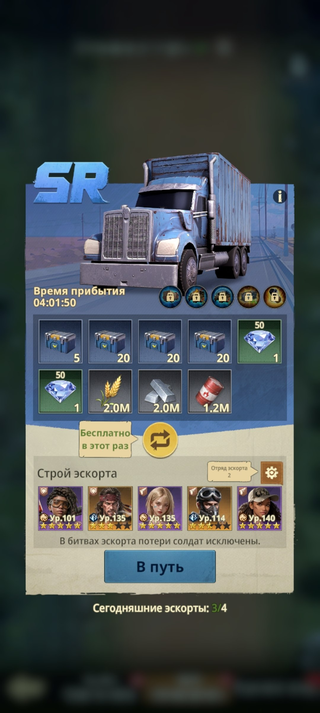
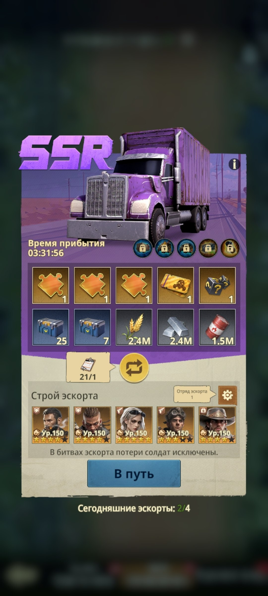
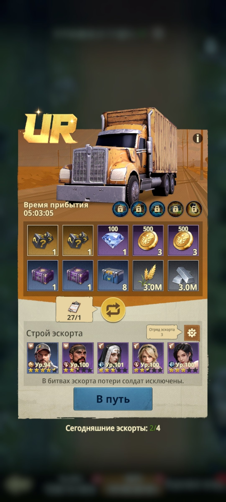
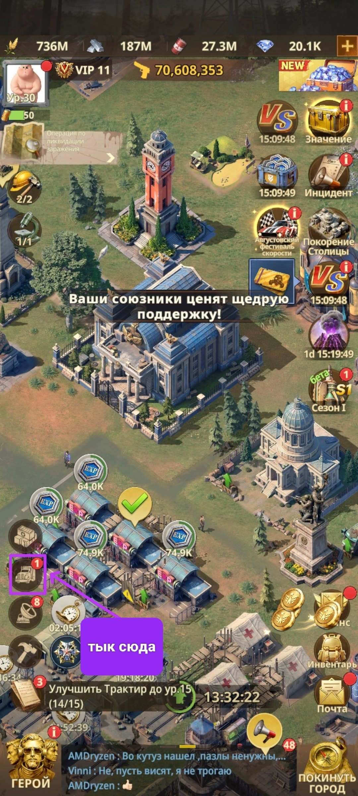

🚚 Мой транспортник
🚚 Мой транспортник Это ежедневное событие-рутина, где Вам дают 2-4 транспортника на отправку за различными наградами. Награды можно «прокручивать» и остановиться на подходящем варианте. Для прокрутки нужны «Контракты конвоя» - они также выпадают из ящиков Спецопераций. Виды транспортников по ценности: • N, R, SR - самые слабые, наград меньше всего • SSR / фиолетовые - средние награды • UR / золотые - лучшие награды 😎 • Элитный тягач - лучший вариант, доступен после полного исследования ветки «Конвой» и может быть ограблен только один раз. Отряды для защиты настраиваются вручную один раз. Выберите, какой отряд будет защищать каждый грузовик, а самый сильный отправляйте с золотыми транспортниками. После прибытия, примерно через 3-5 и более часов, не забудьте забрать награды.

🚚 Транспортник N - базовые награды

🟢 Транспортник R

🔵 Транспортник SR

🟣 Транспортник SSR

🟡 Транспортник UR - лучшие награды

⚙️ Настройка отряда для защиты транспортника